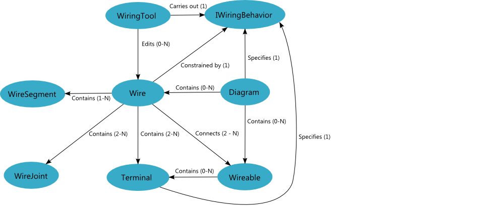
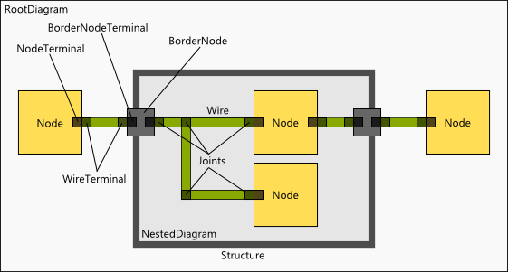

The Wiring System
The Diagram SDK wiring system manages the creation and editing of wires between nodes on a diagram. In many cases, there are application-specific requirements for wiring visuals and constraints that must be adhered to when creating and manipulating wires. Thus, the wiring system provides interfaces and base classes that allow you to customize wire visuals and write wire management plug-ins that constrain wires as you see fit.
Wiring System Architecture
The following diagram illustrates the high-level architecture of the wiring system.

Wiring System Theory of Operation
Wires, which are composed of WireTerminals, WireJoints, and WireSegments, connect Wireables, such as Nodes and NestedDiagrams, on a RootDiagram. Wire routing is constrained by an implementation of IWiringBehavior, which manages the end user's creation, movement, and configuration of wires through a WiringTool.
As shown in the following simplified diagram, a wire originates at a WireableTerminal (i.e. a NodeTerminal or a BorderNodeTerminal), which connects to a WireTerminal. The length of the wire, which comprises 1 or more WireSegments connected by WireJoints, routes on a Diagram and terminates with one or more WireTerminals, each of which connects to a WireableTerminal.

Managing WireJoints and WireSegments
Wire management involves keeping WireJoints and WireSegments up-to-date and consistent with one another. If you use the ManhattanWiringBehavior built into the Diagram SDK, you won't need to worry about wire management. However, if you implement your own IWiringBehavior based on the Wire and WireJoint APIs, wire management is up to you.
Primary Types that Participate in the Wiring System
The following table describes the primary types that participate in the wiring system.
| Class | Description |
|---|---|
| Wire | Contains WireJoints and WireSegments and represents a wire in the model |
| WireJoint | A joint is a point in a wire that is connected to one or more other joints in the wire. A joint can be a terminating joint or bend or a branch |
| WireSegment | A segment represents the connection between two adjacent joints |
| IWiringBehavior | Controls how Wires are created and joints and segments are moved |
| WiringContext | Uses an IWiringBehavior to create and edit wires |
| IWiringStart | A start element for a wiring operation |
| IWiringEnd | An end element for a wiring operation |
| WiringTool | The tool in the editor that allows the user to create, branch, and connect wires |
| WireControl | The WPF/Silverlight UserControl which binds to the Wire and visually displays it; also manages direct wire segment selection and movement (it moves segments by calling into the IWiringBehavior functions and passing in the WireSegment(s) selected) |
| Diagram Wires | can be created between IWiringStart and IWiringEnd points on a diagram |
| RootDiagram | Contains several high-level functions which create wires and connect them using the lower-level Wire API; also has the KeepWiresAttached function which updates the wire to stay connected to moving nodes with wired terminals |
WiringTool
The WiringTool is the tool responsible for intercepting user gestures such as mouse clicks and translating them into wiring actions on the diagram.
The WiringTool uses the RootDiagram for point transformation, for example in its CreateWiresBetweenSelection method. The WiringTool uses the Wire by calling MakeJoint to create joints in the source wire and calling CreateTerminal to add Terminals to the source Wire. The WiringTool uses the IWiringBehavior interface by calling its CreateWire method to create a simple wire when the user starts a new wire operation, and continues to call into the interface as the user progresses through the wiring operation. The WiringTool also uses the IWiringBehaviour interface to determine whether a WireJoint exists near a given position.
IWiringBehavior
An IWiringBehavior implementation calls directly into the APIs for Wire, WireJoint, and WireSegment to manage custom wiring behaviors. This interface allows you to design a custom wiring system by defining specific behaviors, such as how to create, move, and collapse wire joints and segments. This interface also helps enfore the validity of wires through the ValidateSegmentPoints method.
Wire
The Wire class makes extensive use of the WireJoint and WireSegment APIs, as it maintains lists of its joints and segments and manipulates them frequently.
WireJoint
The WireJoint implements the ICompositeWireJoint interface and so calls back into its parent Wire to implement the functions on that interface. It also calls into its parent wire when its Top or Left position changes so that it can tell the wire to emit the PropertyChanged event.
WireSegment
The WireSegment uses the WireJoint API, since it is comprised to two WireJoints. It listens to its two joints' PropertyChanged events and passes them up to the user interface.
RootDiagram Class
The RootDiagram can create complex wires by calling into the Wire API and the IWiringBehavior API.